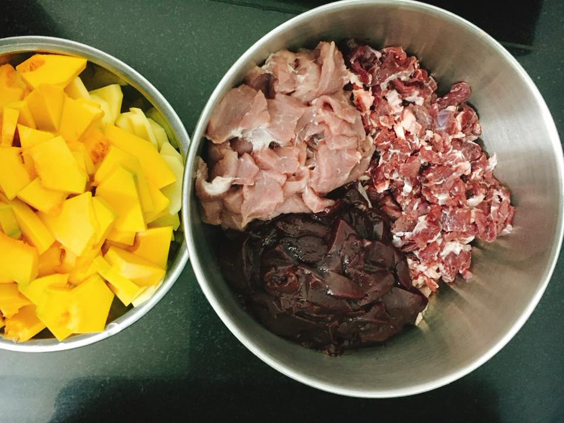
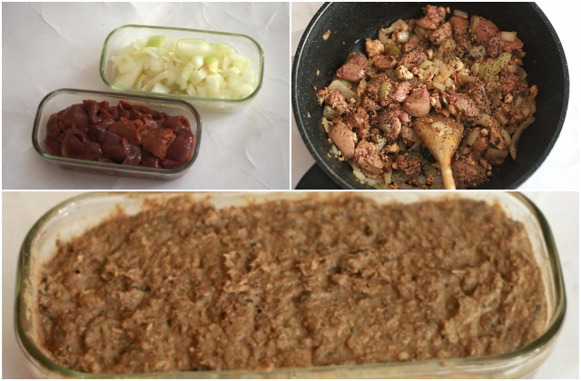

Pate cho mèo được làm từ cá, thịt gà, bò, nội tạng động vật… Đây đều là những nguồn dinh dưỡng cần thiết trong bữa ăn của mèo con. Những thành phần dinh dưỡng này bổ sung Protein, đạm, Vitamin giúp mèo đủ chất, phát triển cân bằng. Bổ sung lượng Canxi còn thiếu giúp xương chắc, răng khỏe.

Nguyên liệu làm pate cho mèo
Trước khi tìm hiểu cách làm pate cho mèo con, bạn cũng cần nắm được khẩu vị của chú mèo nhà mình. Từ đó có những nguyên liệu phù hợp. Nguyên liệu bạn cần chuẩn bị sẽ làm được khoảng 1kg pate đặc. Hoặc 1.5kg – 2kg pate loãng, sền sệt như súp. Đủ cho chú mèo con ăn vài ngày đến 1 tuần tùy khẩu phầnLưu ý trong cách làm pate cho mèo con, không nên cho quá nhiều nguyên liệu. Không phải cứ nhiều là tốt. Đây là nguyên liệu hỗn hợp không yêu cầu cao về thành phần nguyên liệu. Nếu chú mèo nào thích cá thì bạn nấu gỡ xương rồi chế biến cùng nhé. Bạn nào thích pate gà thì bỏ thịt lợn, gan lợn… Tùy theo sở thích và có những công thức chế biến khác nhau. Nguyên liệu chủ yếu
Bí đỏ: Nửa quả to, khoảng 500 – 600g
Thịt gà, thịt lợn cũng 500g
Gan gà, lợn 500g
1 túi sữa tươi không đường.

Cách làm pate cho mèo con ngon nhất khi tỉ lệ rau củ – thịt – gan là 1:1:1. Các bạn có thể du di tỉ lệ cũng không sao. Có thể thay bí bằng cà rốt nhưng mùi không thơm bằng, hoặc lẫn cà rốt, bí đỏ đều được.
Sơ chế
Một số dấu hiệu nhận biết về vấn đề hô hấp ở Phốc sóc là: Ban đầu cún có triệu chứng ho, lâu sẽ dẫn đến tình trạng khó thở, cún phải lấy hơi và thở một cách khó khăn. Phần sụn trong khí quản của Phốc sóc khá mềm và dễ bị chấn thương. Một tác động mạnh tới phần cổ hoặc cũng có thể do dây xích của cún quá chật. Dẫn đến tràn dịch khí quản.
Mỗi người sẽ có cách làm pate cho mèo con riêng. Tuy nhiên, tóm gọn lại các bước cơ bản như sau.
1. Gan rửa sạch, kiểm tra cắt bỏ túi mật, thái miếng cho nhỏ bớt, ngâm sữa 15 – 20 phút để tiêu độc, xong luộc chín. Bí đỏ, thịt cắt miếng nhỏ, luộc chín mềm.
2. Bỏ nguyên liệu vào máy xay xay nhuyễn, trong quá trình xay đổ 1 ít nước thì dễ xay hơn. Nhà bạn nào không có máy xay có thể băm nhỏ nguyên liệu.
3. Đổ hỗn hợp vào nồi để lửa nhỏ, đậy nắp đun 20 – 30 phút tùy lượng nguyên liệu. Thỉnh thoảng dùng đũa đảo đều tay, kiểm tra xem có bị xém pate phần đáy hay không. Với pate loãng thì bạn ít phải đảo hơn vì nhanh chín và không dễ xém đáy nồi.
4. Khi nào pate đặc quánh lại, có mùi thơm, khô. Lưu ý trong cách làm pate cho mèo con đặc hoặc lãng nhé. Pate đặc thì không có nước thừa. Pate loãng thì chỉ cần sủi là có thể tắt bếp. 5. Để nguội rồi mới cho vào hộp nhựa, cất tủ lạnh.

Pate bảo quản tủ lạnh thường khoảng 1 tuần nếu chín kĩ và nguyên liệu sạch. Bảo quản tủ đá được gấp 2 – 3 lần thời gian. Cách làm pate cho mèo con chỉ đơn giản vậy thôi, không hề khó chút nào. Đến bữa bạn lấy lượng pate vừa đủ ra bát, cho vào nồi cơm hấp khoảng 2 phút. Để nguội bớt là có thể phục vụ mèo cưng được rồi. Pate ăn liền hoặc trộn hạt, cơm đều được. Nhưng nếu trộn cơm thì lượng cơm ít ít thôi vì nhiều cơm là mèo cưng sẽ không thích.
Bây giờ thì bạn đã biết cách làm pate cho mèo con rồi chứ. Nếu bạn không có thời gian có thể mua các sản phẩm pate đóng hộp có bán sẵn tại Pet Shop nhé. Chúc bạn thành công!